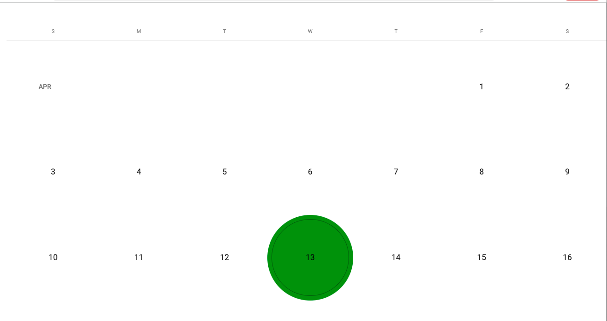

Architecturing a new Angular Project
Sometimes you build to learn...and that means to fail
I've stated earlier that personal projects are the gateway towards developing one's confidence in an endeavor. I'm working on a habit tracker, to keep track of my habits and eventually to provide me feedback on how I am doing and building towards my own goals.
Let your creativity wander
Sometimes in thinking through a software project, I get caught up in the details. Things like, how am I going to have the list refresh after adding a new product. Am I making the right initial decisions. I've found solace in breaking that thought pattern. Engaging with visual diagrams has been a helpful way to help me navigate the process. Being open to the process of design allows a lot more flexibility to what it is that you engineer. Below are some of my simple proof of concepts that cover what I wanted most out of my habit tracker. A list of high level habits that I want to accomplish and a view that shows me the days that I've accomplished those habits on a calendar.
An image of the main screen where habits are entered for on a daily basis
An image of a calendar which will display the completed / missed habits per day.
Just the beginning
There's a point in any new product where the excitment is overriden by the work. In fact, getting this prepared I was stuck on a specific issue around setting up my login page that took days to resolve. That's okay. It's important to develop a muscle of persistence in the face of the seemingly unimportant details. The truth of the matter is that, the details are super important. It's often easy to fantisize about an outcome that you want but what's in the space between is the work and you can work to avoid the work (think about it) or you can see the work as something that is to be gotten through. If you're not feeling that sense of cutting through something then it might be a time to take a look at how you would like to spend your energy. It might be software engineering but perhaps in a different novel way?
Work, Reflect, Relax and Repeat.
Intuitively,
A